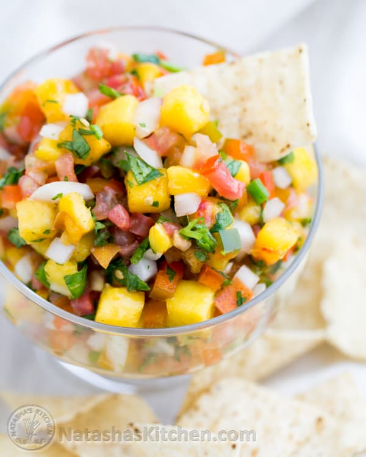

Simple Peach Salsa

Description
peach salsa is a little less acidic than a regular tomato salsa. Not only is it delicious as an appetizer with tortilla chips, it’s also really good as a topping for fish or pork; who would have thought?
Ingredients
- 1 lb tomatoes, diced
- 1 bell pepper (4 oz), seeded and finely diced
- 2 jalapenos, seeded and finely diced
- 1 medium onion, finely diced
- 1 1/2 lbs peaches, diced
- 1/2 bunch cilantro, chopped
- 2 Tbsp lime juice
- 1 1/2 tsp salt, or to taste
- 1/4 tsp freshly ground black pepper or to taste
Steps
- Toss cubed peaches and lemon juice in a bowl. Sprinkle with cilantro, cayenne, and sugar. Mix to combine.